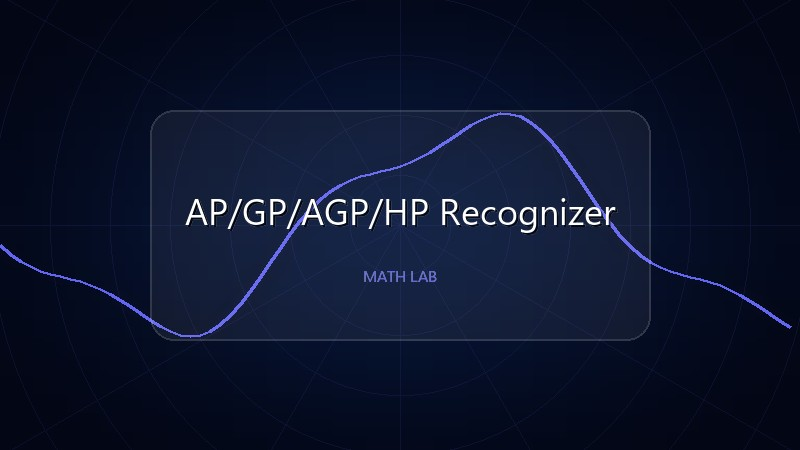
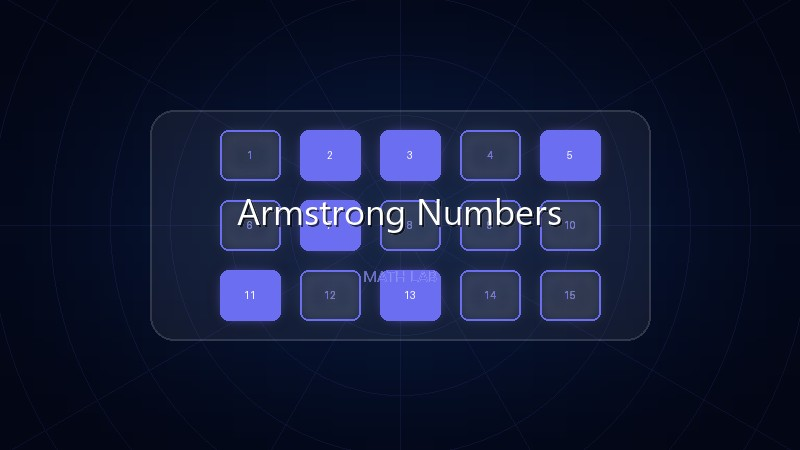
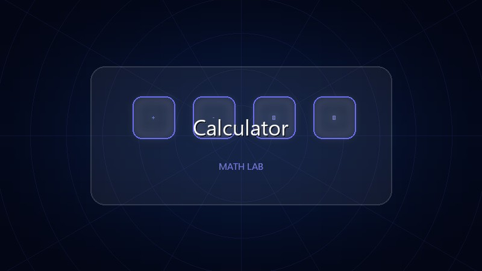
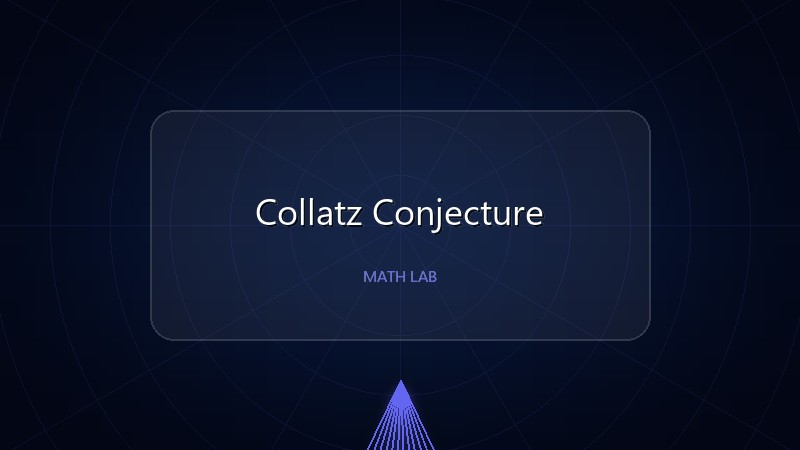
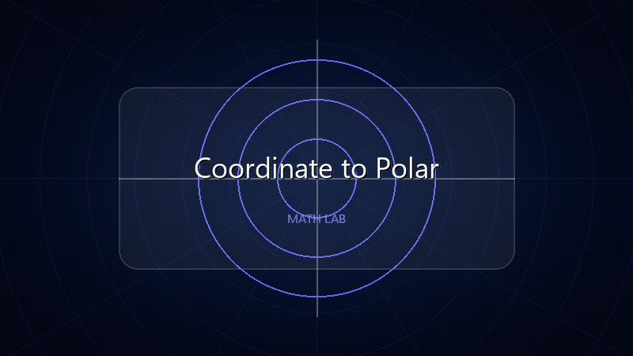
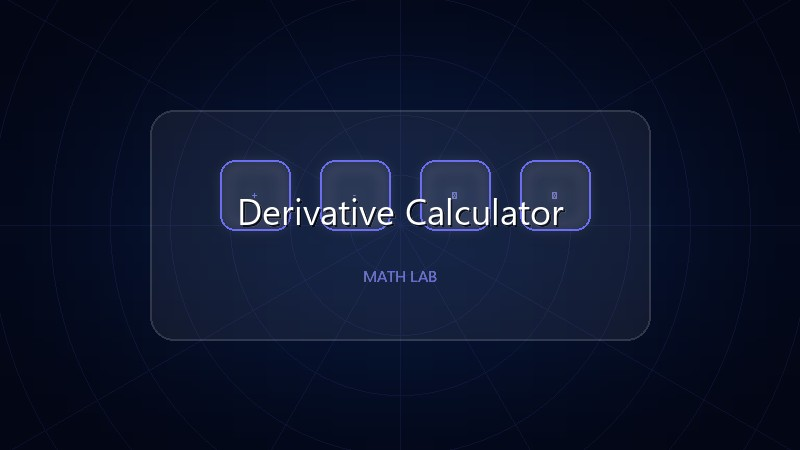
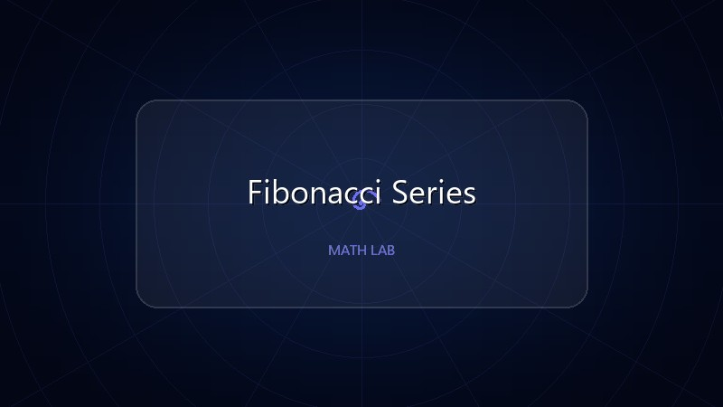
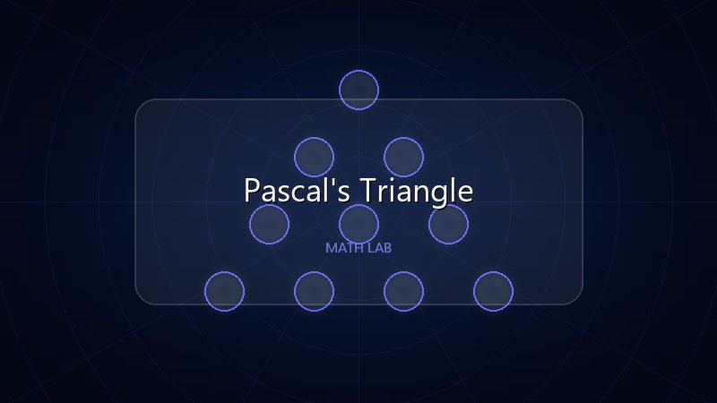
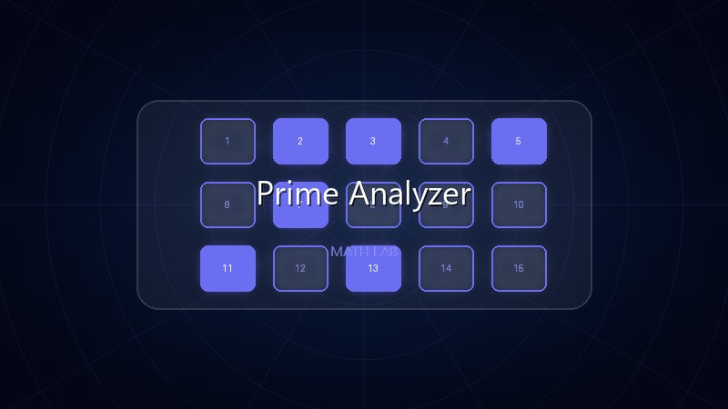
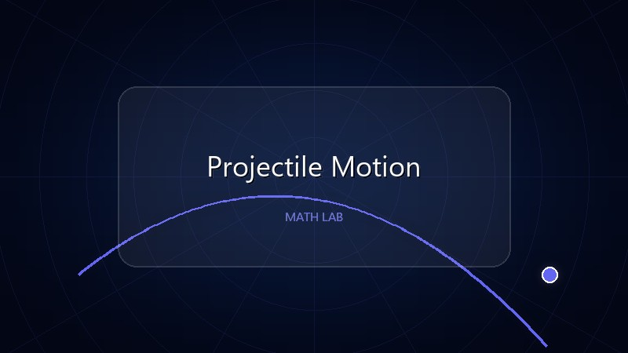

Interactive Python Math Visualizations
Explore beginner-friendly Python math projects in your browser—visualizations, calculators, and more.

AP/GP/AGP/HP Recognizer
Identify progression types from any sequence.

Armstrong Numbers
Check special number properties!

Calculator
Your mathematical companion!

Collatz Conjecture
Explore the 3n+1 problem!

Coordinate to Polar
Transform Cartesian (x, y) into polar (r, theta).

Derivative Calculator
Compute 1st/nth polynomial derivatives and evaluate them.

Fibonacci Series
Generate Fibonacci sequences!

Pascal's Triangle
Beautiful hexagon visualization!

Prime Analyzer
All-in-one prime number toolkit!

Projectile Motion
Calculate TOF, Hmax, and Range with physics!